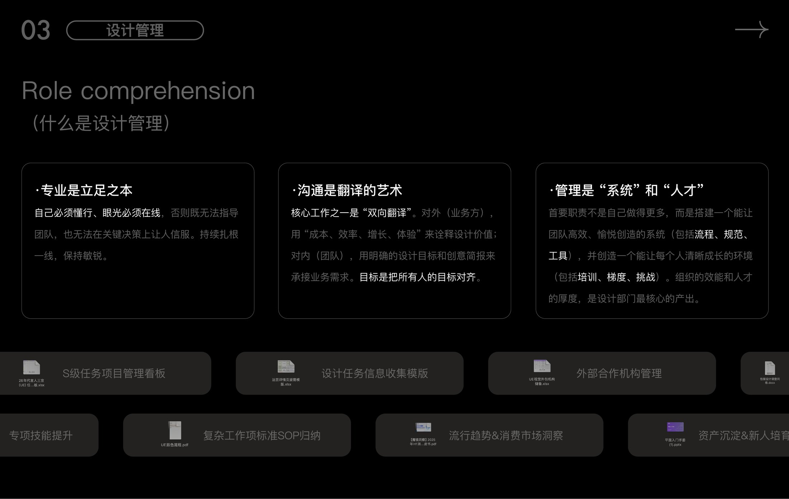
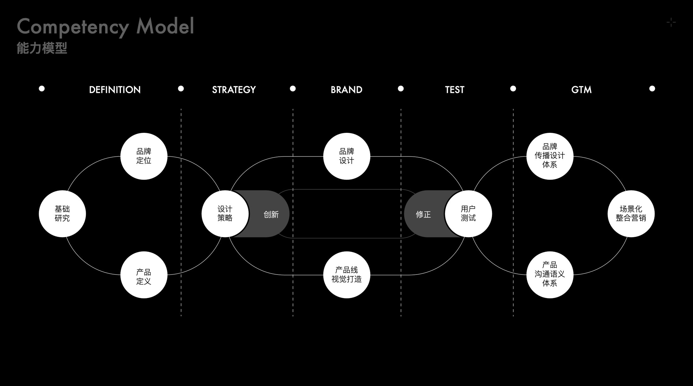

Design Management
The job is not to do more personally. It is to build a system a team can create inside — and an environment where each person grows visibly. 首要职责不是自己做得更多，而是搭建一个能让团队高效、愉悦创造的系统，并创造一个让每个人清晰成长的环境。


Background
设计背景
Craft is what you stand on. You have to know the work and have a good eye, otherwise you can neither guide the team nor be convincing in a key decision — so staying close to the work and staying sharp is ongoing.
Communication is the art of translation, and it runs both ways. Outward to the business, design value is explained in the language of cost, efficiency, growth and experience. Inward to the team, business needs arrive as clear design objectives and creative briefs. The goal is to get everyone pointing at the same thing.
Management is system and people. The first responsibility is not to produce more personally but to build a system — process, standards, tools — that lets a team create efficiently and enjoy it, and an environment where each person can grow clearly through training, a visible ladder and challenge. Organisational effectiveness and the depth of the talent bench are the real output of a design department.
专业是立足之本：自己必须懂行、眼光必须在线，否则既无法指导团队，也无法在关键决策上让人信服 —— 所以持续扎根一线，保持敏锐。
沟通是翻译的艺术，而且往往是双向的：对外（业务方）用「成本、效率、增长、体验」来诠释设计价值；对内（团队）用明确的设计目标和创意简报来承接业务需求。目标是把所有人的目标对齐。
管理是「系统」和「人才」：首要职责不是自己做得更多，而是搭建一个能让团队高效、愉悦创造的系统（包括流程、规范、工具），并创造一个能让每个人清晰成长的环境（包括培训、梯度、挑战）。组织的效能和人才的厚度，是设计部门最核心的产出。
Approach
设计思路
Systems & People — the decisions that set the direction. 设计管理 —— 决定方向的几个选择。
-
01
Craft is what you stand on专业是立足之本
Know the work and keep your eye sharp. Without it you cannot guide a team, and your decisions will not convince anyone.
自己必须懂行、眼光必须在线，否则既无法指导团队，也无法在关键决策上让人信服。
-
02
Communication is the art of translation沟通是翻译的艺术
Outward: cost, efficiency, growth and experience. Inward: design objectives and creative briefs. The job is alignment.
对外用「成本、效率、增长、体验」诠释价值；对内用设计目标与创意简报承接需求。目标是把所有人的目标对齐。
-
03
Management is "system" and "people"管理是「系统」和「人才」
Build the system a team creates inside, and the environment in which each person grows. That output matters more than any single artwork.
搭建团队创造所依赖的系统，以及让每个人成长的环境 —— 这份产出比任何单件作品都更重要。
Outcome
成果展示


- Team
- A team of 4 — training, evaluation and succession planning4 人团队 —— 人员培训、考核与梯队建设
- Systems
- S-tier project board · design brief template · SOPs for complex workS 级任务项目管理看板 · 设计任务信息收集模版 · 复杂工作项标准 SOP 归纳
- Operations
- External studio management · skill development · trend and market insight · asset retention and onboarding外部合作机构管理 · 专项技能提升 · 流行趋势 & 消费市场洞察 · 资产沉淀 & 新人培育
Next project / 下一个作品
Shuke 3.0